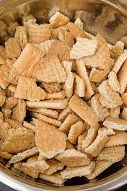
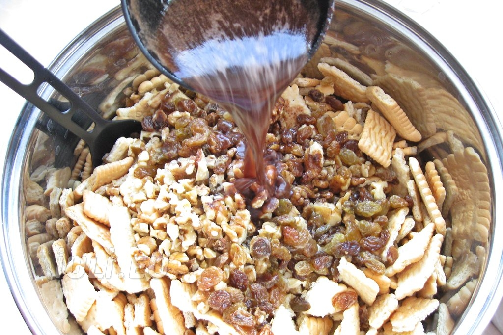
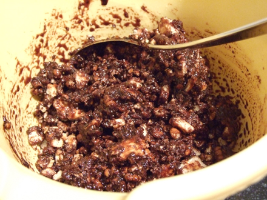

Salamul de biscuiți este un desert italienesc și portughez făcut din cacao, biscuiți sfărâmați, ouă și unt. În mod tradițional, pentru prepararea salamului de biscuiți se folosesc și băuturi alcoolice cum ar fi romul sau Vinul de Porto.Desertul nu are carne in compoziție, iar numele acestuia se datorează formei în care este preparat și bucăților de biscuiți din interior care îl aseamănă cu o felie de salam
Ingredientele necesare pentru prepararea acestui desert în stilul italian sunt biscuiții, cacao, ouă, zahăr și rom. În anumite zone din Italia este folosită și ciocolată neagră topită, existând inclusiv variante în care se utilizează ciocolată albă.
Mai întâi, sunt mărunțiți biscuiții și puși de o parte. Apoi, se amestecă untul cu zahărul glazurat până când se obține o cremă moale, după care se adaugă gălbenușuri de ou, cacao și rom. Acest amestec este omogenizat, iar apoi transferat pe o hârtie de copt, fiind aranjat în forma unui salam, după care se acoperă Salamul de biscuiți nu necesită gătire, ci este lăsat în congelator sau frigider până când se întărește.
  